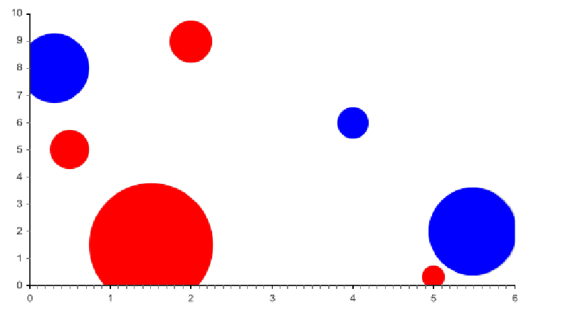

The BubblePlot class is a Chart2D subclass. It is used to represent data as “Bubbles”, defined by their coordinates and radius. It has its own class, since it uses specific data objects : bubbles. The bubble plot is used with series of Bubble object :
Example:
